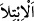

davranırsa, kızlar onun için ateşe karşı perde olurlar.”[184] Hadisteki “ el-ibtilâ”
imtihan demektir. Çoğunlukla zorluklar için kullanılır. Kızlar da bunlardan sayılır.
Çünkü insanlar çoğunlukla erkek çocukları olmasını arzu ederler. Şârih, hadisteki
‘kızlara iyi davranmayı’ onları dengi biriyle evlendirmek olarak açıklamıştır. Lakin
tercihe şayan olan görüş, ihsanı genellemektir. Kızlar babaları için ateşe karşı perde
olurlar. Çünkü kız evladının onlara ihtiyacı küçüklüğünde de büyüklüğünde de çoktur.
Şu halde kim onların ihtiyaçlarını güzelce giderirse bunun karşılığı kendisine cehennem
ateşinden korunma olarak verilir. Nitekim İbn Melek’in Şerhu’l-Meşârık’ında böyle
geçmektedir.
Âyet mü’minleri dünya hayatının geçici süslerinden sakındırmakta ve bunlarla
övünenleri uyarmaktadır. Büyüklerden biri şöyle demiştir: “Dünya hayatının süsüne
kapılmaktan sadece iç âlemini ma‘rifet nûru, muhabbet zıyâsı ve şevk parıltılarıyla
süsleyen, dışını da hizmet âdâbıyla, himmet şerefiyle ve kişiliğini üstün vasıflarla
bezeyen kimse kurtulabilir. Onun iç âleminin ziyneti, Rabbine olan şevkinden dünya
sevgisinin âlâyişine gâlib olur. Zâhirinin ziyneti ise dünyanın ziynetine gâlib olur.
Çünkü onun ziyneti dünyanınkinden daha üstündür.
Dahhâk’tan rivâyet olunur: “Nebi (a.s.)’a “Ey Allah’ın Rasûlü, insanların en zâhid
olanı kimdir?” diye soruldu. “Kabri ve çürümeyi unutmayan, dünya ziynetinin gereksiz
olanlarını terk eden, kalıcı olanı/Bâkî’yi fânîye tercih eden, yarın hesabında olmayan
ve nefsini ölülerden sayandır.”[185]
Kudsî bir hadiste şöyle buyrulmuştur: “Kuluma dünyadan bir genişlik verdiğim
zaman kulum sevinir. Halbuki o şey onu benden uzaklaştırır. Dünyalığını daraltınca
da üzülür. Halbuki o hal kulumu bana yaklaştırır.” Sonra Nebî (a.s.) şu âyeti okudu:
“Onlar sanıyorlar mı ki kendilerine verdiğimiz mal ve oğullar ile onların
iyiliklerine koşuyoruz? Hayır, onlar işin farkına varamıyorlar.” (el-Mü’minûn,
23/55-56) Bunun kendileri için bir imtihan olduğunu fark edemiyorlar.
Şeyh Sa‘dî der ki:
Zâhid siyretli Hakperest bir kimsenin
Eline altın bir kerpiç düştü
Tüm gece bu hazine ve malı düşündü
“Bir şey yapayım ki elimden gitmesin
Âciz düştüğümde kimseden bir şey istemeyeyim
İki büklüm olup istemeyeyim, belim düz kalsın
Zemini mermerden olan bir saray yapayım
Tavanının ağaçları olsun hep ud ağacından
Bir oda dostlara mahsus olsun
Odanın önünde saray bostanı
Yama üzerine yama vurmaktan usandım
Başkalarının cümbüşünün harâreti gözümü beynimi yaktı